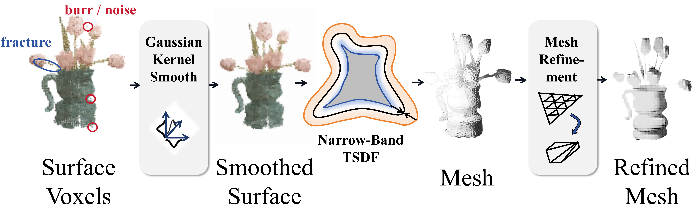

System Overview

FGGS-LiDAR integrates Gaussian-based scene representation, watertight mesh reconstruction, and GPU-parallel LiDAR simulation. Pretrained 3DGS assets are discretized into occupancy volumes, fused into a narrow-band TSDF, and converted to meshes. A BVH-accelerated ray-casting engine then performs first-hit queries at real-time rates, enabling physically grounded, scalable LiDAR sensing directly from general 3DGS content.
3DGS Voxelization

We convert continuous Gaussian fields into sparse occupancy grids via LBVH-accelerated accumulation. Each Gaussian contributes probabilistically to local density, preserving thin structures and high-frequency geometry while keeping the memory footprint compact. This forms the basis for robust TSDF reconstruction in the next stage.
Denoised → Mesh
We perform narrow-band TSDF propagation and extract surfaces with Marching Cubes, followed by structure-preserving smoothing. The resulting meshes are watertight and topologically consistent, eliminating local artifacts without shrinking geometry. Such meshes are ideal for accurate, physically meaningful ray–triangle intersection in LiDAR simulation.
Scene Rendering

Mesh-based rendering retains the global structure and sharp boundaries of the original scenes while providing reliable normals and visibility for sensing. Compared to splat-only rendering, the reconstructed geometry offers consistent surfaces and fewer blending artifacts, ensuring high visual fidelity and compatibility with physically grounded LiDAR ray interactions.
Depth Limitations

Imaging principle. In 3DGS, “depth” is an opacity-weighted expectation along the camera ray— a view-dependent average rather than a true geometric intersection. This leads to characteristic artifacts: edges and thin structures appear blurred or widened due to splat blending, and underconstrained regions (back-facing or rarely observed surfaces, low-texture areas, glossy materials) produce dropouts or holes. LiDAR instead reports first-return geometric distances, directly tied to scene geometry and free of averaging artifacts.
Computational efficiency. Depth rendering in 3DGS accumulates over many anisotropic Gaussians per pixel; its cost and memory grow with image resolution and footprint, making high-res rendering expensive. Our simulator performs BVH-accelerated ray–triangle intersections whose cost mainly scales with beam and triangle counts. Independent rays enable highly efficient GPU parallelization and stable performance across scenes.